Location: South ambulatory, Chartres Cathedral
Date: Circa 1205–1215
Commissioned by: Unknown, but likely associated with clerical donors or cathedral chapter
Restorations: Restored in the 19th century by master glazier Émile Hirsch and again in the 20th century by the Atelier Lorin of Chartres.
Sources used for identification: Corpus Vitrearum, Malcolm Miller’s Chartres Cathedral, visual comparison with known iconographic cycles, and direct image analysis.
|
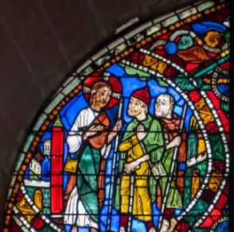 Road to Emmaus Jesus joins two disciples on the road after the Resurrection; they do not yet recognize him. |
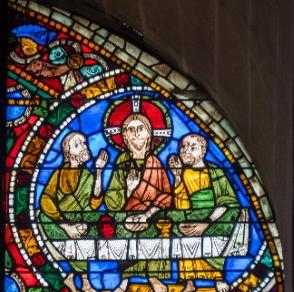 Supper at Emmaus Jesus reveals himself while dining with the two disciples who had not recognized him. |
|
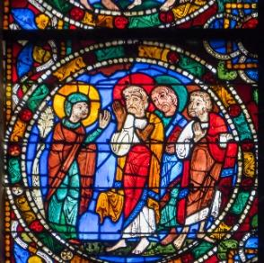 Women Announce the Resurrection A sainted woman reports to grieving apostles that Christ has risen from the tomb. |
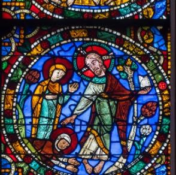 Christ Appears to the Holy Women Jesus greets two sainted women, one kneeling in reverence at his feet. |
|
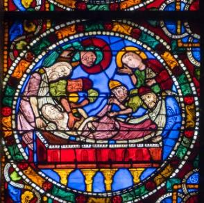 Entombment Christ's body is laid in the tomb by his followers. |
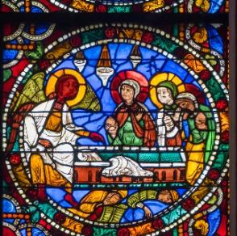 Women at the Tomb Women discover the empty tomb of Christ. |
|
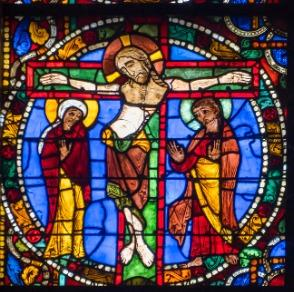 Crucifixion Christ is nailed to the cross, with mourners below. |
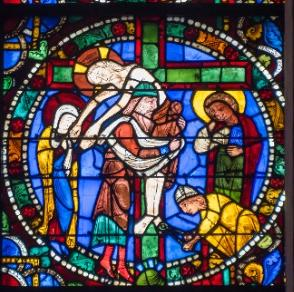 Deposition Christ’s body is taken down from the cross. |
|
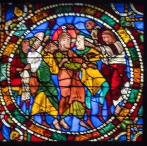 Mocking of Christ Christ is mocked and beaten before his crucifixion. |
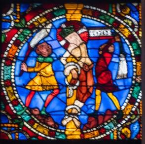 Scourging at the Pillar Christ is tied and whipped by Roman soldiers. |
|
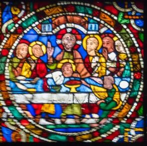 The Last Supper Christ shares a final meal with his apostles, instituting the Eucharist. |
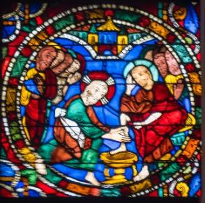 Washing of the Feet Jesus humbly washes the disciples’ feet before his Passion. |
|
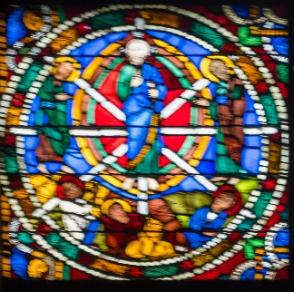 Christ in Majesty Christ enthroned in a celestial mandorla, surrounded by saints or apostles. |
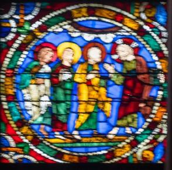 Christ Teaching the Apostles Christ instructs three disciples, symbolizing spiritual guidance. |